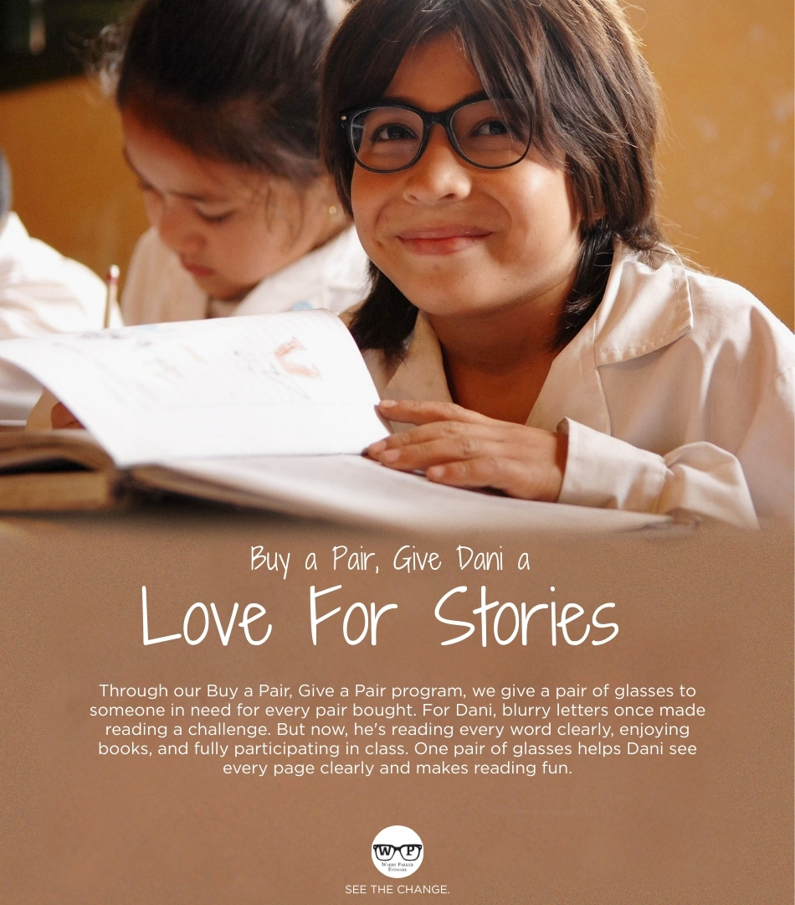
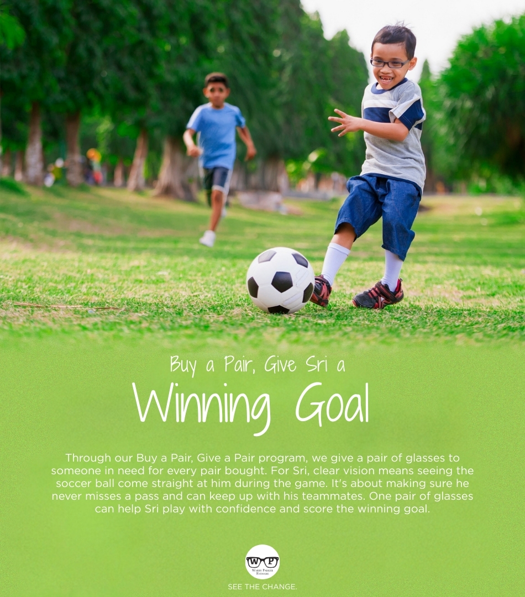
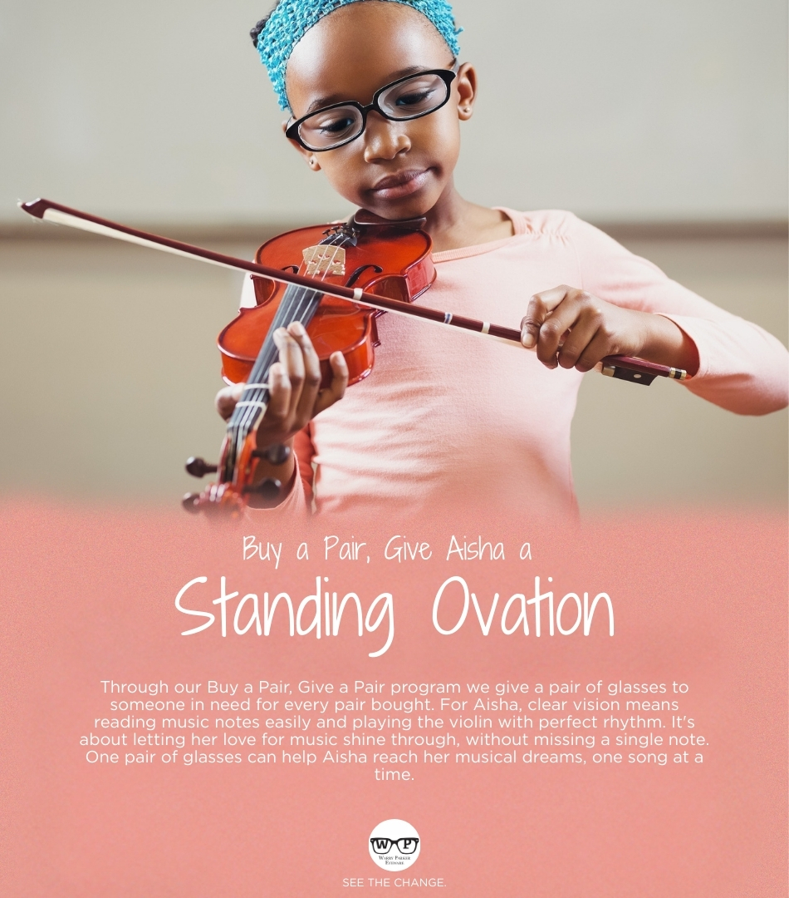

See the Change
This campaign highlights the real-world impact of Warby Parker's “Buy a Pair, Give a Pair” program. Each ad tells a story of a child whose life has changed for the better through improved vision. These personal narratives show how the gift of glasses leads to confidence, success, and opportunity.

Buy a Pair, Give Dani a Love for Literacy
This ad showcases Dani’s journey from struggling to read to loving literature through Warby Parker’s program.

Buy a Pair, Give Sri a Winning Goal
Sri’s vision correction helped him find confidence and success in soccer thanks to a donated pair of glasses.

Buy a Pair, Give Aisha a Standing Ovation
Aisha now sees clearly on stage — a transformation made possible by Warby Parker’s mission.